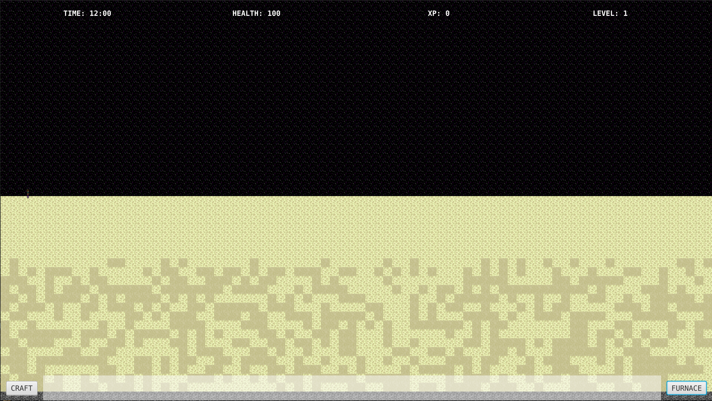

Flatcraft
Flatcraft est un projet collaboratif par équipe de 4 dans le cadre de l'IUT, ce projet a eu avant tout un but éducatif, en effet il servait à développer nos compétences en java. Flatcraftt est tout simplement un jeu en 2D à la minecraft avec des blocs et des crafts !
Le jeu est composé de plusieurs biomes :
- Overworld (le biome de base)
- Le nether (l'enfer)
- Et l'end (biome de fin du jeu)
Donc dans flatcraft nous pouvons explorer le monde, changer de biomes, se fabriquer des outils et des armes, mais aussi raffiner des matériaux et de faire cuire de la nourriture dans le four.

(Lancement du jeu)

(Possibilité de crafter)

(Possibilité d'utiliser un four)
(Minage de ressources)
(Le nether)

(L'end)